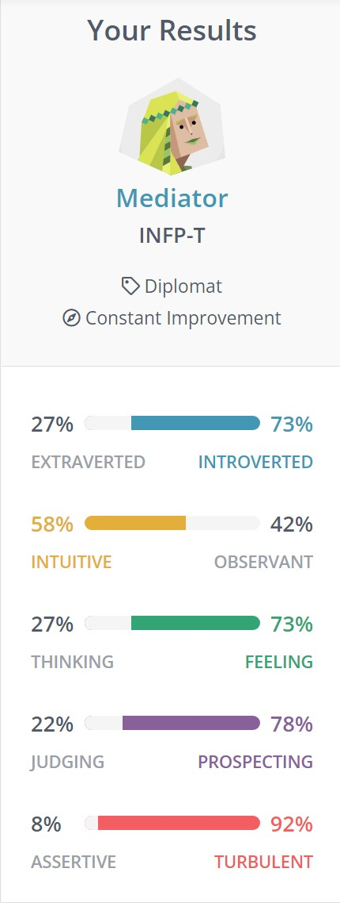
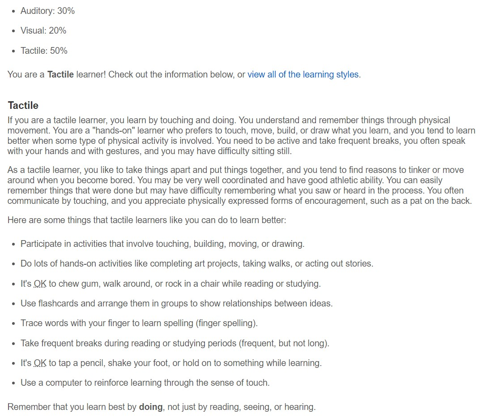
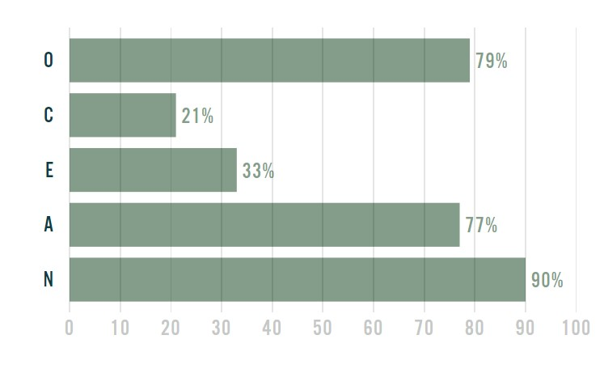

Personal Information
Hello!! My name is Shannon Handiar (student ID: 3937017, email: s3937017@student.rmit.edu.au) I was born and raised in Indonesia and I go by she/they pronouns, I went into college (Diploma) in another Australian institute right after finishing my IGCSE (Year 10), I was also a second-year student in another university for a semester however I recently moved to RMIT so this is my first semester in RMIT. I can converse in English and Indonesian fluently and I can understand some mandarin (Chinese) however I am more fluent in hearing people converse rather than speaking the language myself.
One of my hobbies is film photography, I have always been into vintage stuff like vinyl records, cassettes, film cameras and more. I got my first point and shoot film camera in 2020 and I am currently saving and planning on getting my first manual film camera. Other than film photography, I am quite a gym rat as my closest friends would say. I have been into fitness, weight-lifting to be specific, for almost 3 years now and am quite passionate about it where previously I was in a local basketball team in middle school before retiring due to a knee injury. I find being in the gym very exhilarating especially when I can see progress in myself and also my friends, I also think it is very beneficial not only to my lifestyle but it also rehabilitates my previous and current injuries.
Personality Profile
With the results from the Myers Brigg test, I do agree with my results. Being more introverted, I do find it a bit difficult to converse with new people especially in a new environment however, once I become more comfortable, I am able to converse freely and comfortably. I am much more intuitive and more of an emotion-oriented person which does allow me to be more understanding of other people however I am able to look at the facts and rationally make decisions that would lead to straightforward outcomes.
When working in a team, many trial and errors would occur and a lot of hands on work would be needed and as someone who is a tactile learner, I would be able to adjust and learn easily when given hands on experience which would allow more flexibility for the team. According to the five-personality test, I have a high score in openness and agreeableness which allows me to give more creative input or solutions that could be beneficial to the team project and would allow me to easily maintain solidarity with my teammates to ensure a smooth workflow.
Having these traits would be useful in a team as it would allow me to be more mindful to my teammates which would produce a good understanding relationship with one another resulting in a lower risk of conflict in a team which is very vital as a bad relationship would result in poor product.



Project Idea
Overview
My IT project idea is to develop a smartphone app that would allow people to connect with professionals around the world for mental support. Users can download the app and sign up. After they sign up, they can chat with available professionals for support. The app will also find offline and suitable help for said users so the users could seek face-to-face support if desired.
Motivation
With the current pandemic, people are more prone to stress as they are constantly required to take safety health procedures to keep themselves safe which can be overwhelming for some people. Along with that, some people have to continue their studies online or are constantly at home for quarantine and because of the self-isolation which may cause mental related issues. Most mental health services require the user to phone a specific number and from there would require exchange emails for further communication however, in some cases, people may not have access or are unable to call due to circumstances or they may be dependent on Wi-Fi connection. According to the Australian Institute of Health and Welfare, 4.4 million people received mental health-related prescriptions in 2019-2020 and between 16 March 2020 and 19 September 2021 almost 21 million MBS-subsidised mental health services were processed hence why I wanted to develop an app that would provide mental health services 24/7.
Description
The app would ask the user to sign up using their personal email. Once their account and personal information are set up and verification is completed, they are able to use the app’s features. The app will provide a list of professionals that are there to respond along with areas where they commonly counsel for (anxiety, parent issues, relationships, stress,etc). There would also be a tab for mental exercises and tips which a user could refer to and use. The app would also be able to seek offline help according to the user’s requirements and worries so the most suitable professional and institute can be found, this allows users who are worried for certain issues that could be seen as controversial in their local area. When the user does want to seek help, they would just need to click a button, this will then bring them to choose a preferred form of communication whether they would like to have an in-app chat, call (WIFI or phone) or video call. Once the preferred media is selected, the user will be directed. If the in-app chat was selected, a chat will automatically start with a professional. If a call or video call was chosen, the representative will immediately contact the user. If the user decides to request to continue the services, the app would notify the user for further appointments.
Tools and Technologies
The software needed in order to create the app would be any programming software (Thonny, Visual Studio, SQLite, etc) in order to code the program. It may also require other softwares for databases
Skills Required
The skills required in order to make the project idea possible would be being able to work in a team. Working in a team requires skills such as being able to adapt easily, being flexible and to be able to communicate well with other people. It would also require skills in the IT field as creating an app is very code-based and would require in depth skills in programming. Social skills is also required as there would be a lot of communication between different people in order to get proper feedback to ensure that the app created is user friendly and up to expectations.
Outcome
In the outcome, a functional app would be produced. Along with the app, I would be able to learn experiences I have not come across if I were to make a different app for a different purpose. Given the opportunity to create the app would also give me a lot of feedback and would allow me to improve on areas that I lack and would let me learn and prepare me more for a future project that requires me to create a similar app.